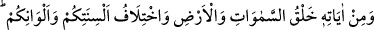

İbn Abbas (r.a.): “Sevgi büyüğe, merhamet ise küçüğedir.” demiştir.
“Doğrusu bunda,”
yâni
zikredilen
insanların
topraktan
yaratılmalarında,
kendilerinden/kendi cinslerinden eşlerinin yaratılmasında, eşleriyle aralarında sevgi ve
merhamet peydâ edilmesinde Allâh’ın san‘atını ve fiilini “iyi düşünen” ve bunlardaki
hikmet ve maslahatları bilip öğrenen “bir kavim için” büyük “ibretler vardır.”
Burhânü’l-Kur’ân’da der ki: “Âyet “düşünürler/tefekkür ederler” sözüyle
tamamlanmıştır. Çünkü, tefekkür insanı zikredilen mânâlara vâkıf olmaya götürür.”
Fakîr (Bursevî) der ki: Herhalde âyetin bu sözle tamamlanmasının sebebi, zikredilen
hususları kavramanın tefekkür ehline, yâni âlimlere mahsus olmamasındandır. Bilakis
azıcık bir tefekkür eden kimse bile bunları idrâk eder.
Tefekkür, tezekkürden aşağı derecededir. Bu yüzden tezekkür Kur’an’da ancak akıl
sâhipleri (ülü’l-elbâb) ile beraber zikredilmiştir.
Bu âyette ruh ve nefsin eşleşmesine işâret vardır. Çünkü Allah Teâlâ Havvâ’yı Âdem
(a.s.)’dan yaratıp ona eş kıldığı gibi nefsi ruhtan yaratmış, onun eşi kılmıştır. Bu, Âdem
(a.s.) Havvâ ile kaynaşıp ülfet ettiği gibi ruhların nefislerle kaynaşıp ülfet etmesi
içindir. Havvâ olmasaydı Âdem (a.s.) cennette yalnızlık/yabancılık hissederdi. Aynı
şekilde kendisiyle kaynaşması için nefis ruhtan yaratılmamış olsaydı, ruh bedende
yalnızlık/yabancılık hisseder ve orada yerleşmezdi. Bedende kaynaşıp yerleşmeleri için
ruh ile nefis arasında ülfet ve ünsiyet peydâ edilmiştir. “Doğrusu bunda,” bütün
mahlûkâtın yaratılmışlık konusunda kendisine tâbi olduğu insanda Allâh’ın nasıl
ma‘rifetten bir sır yerleştirdiğini fikr-i selîm ile “iyi düşünen bir kavim için ibretler
vardır.” et-Te’vîlâtü’n-Necmiyye’de böyle geçmektedir.
22. O’nun delillerinden biri de, gökleri ve yeri yaratması, lisanlarınızın ve
renklerinizin değişik olmasıdır. Şüphesiz bunda bilenler için (alınacak) dersler
vardır.
“O’nun” zikredilen yeniden diriltme ve yapılanların karşılığını vermeye delâlet eden
“delillerinden biri de, gökleri ve yeri” büyüklüğüne, kesâfetine ve parçalarının
çokluğuna rağmen bir madde olmaksın “yaratması,” daha önce canlı olanları yeniden
yaratmaya kudretinin olduğunu apaçık gösterir. Bu âfâkî (dış âlemle ilgili)
âyetlerdendir. Sonra Allah enfûsî (iç âlemle ilgili) âyetlerden bâzısına işâret etmiş ve
şöyle buyurmuştur:
“Lisanlarınızın” yâni, her sınıfa dilini öğretmek sûretiyle Arapça, Farsça, Hintçe,
Türkçe ve diğerleri gibi dillerinizin farklı olmasıdır.